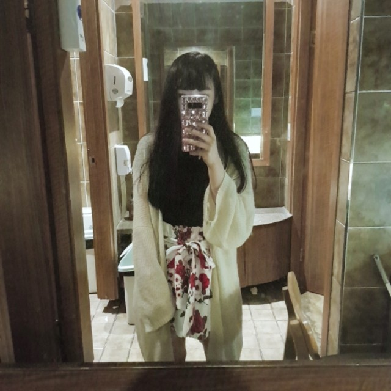
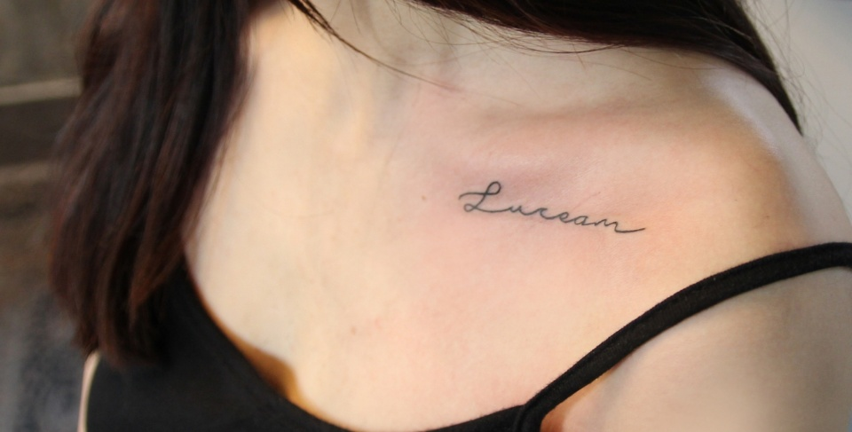

WELCOME TO MY PAGE

김예빈/22
경기도 부천시
을지대학교 방사선학과 17학번 자퇴
현재 청운대학교 컴퓨터공학과 18학번 재학중
취미: 그림그리기, 피아노치기, 춤추기, 피어싱

LUCEAM
밝게 빛나리라 라는 뜻의 라틴어, 쇄골에 레터링
STUDY - 공부할 때 필요한 자료들을 모아두었다.
MY WORK - 지금까지 그렸던 그림들.
컴퓨터를 포맷시켜서 날린 그림들도 많아 올려둘 공간이 필요했고,
지금까지 그렸던 것을 시기에 나눠 한눈에 볼 수 있으면 좋겠다고 생각했다.
남아있던, 여기저기에 흩어져있던 그림들을 모아두었다.
VIDEO - 춤영상.
을지대학교 방사선학과 치어리딩시절 공연 영상
18년도 발대식, 19년도 엠티 장기자랑 영상은 찾으면 추가